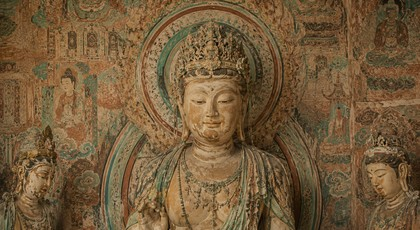

敦煌壁画中的飞天美学
飞天的姿态轻盈优美，承载着人们对美好世界的向往。
鹿鸣呦呦，敦煌同好相聚之地
飞天的姿态轻盈优美，承载着人们对美好世界的向往。

初唐、北魏风格的过渡，线条与色彩的完美融合。
探索敦煌壁画中的矿物颜料与配色智慧。
以笔墨致敬千年，分享你的敦煌灵感
05.10 10:00 - 06.10 18:00 1,286 人参与每日打卡学习，赢限定数字藏品
05.01 00:00 - 05.31 23:59 3,652 人参与上传你的纹样灵感，优质作品将展示在社区专题页。
请发布与敦煌文化、艺术学习和资料分享相关的友善内容。
新增 36 组经典配色，可在资源共享区查看与下载。
清鸽 · 32 回复 · 刚刚更新
鹿鸣居士 · 18 回复 · 1 小时前
沙漠之花 · 24 回复 · 3 小时前